Pragmatis · Logo final (fase 3)
Símbolo Ascenso con la paleta Páramo. Todos los archivos son SVG vectoriales; el nombre está convertido a trazados (Space Grotesk 600 con kerning real), así que no depende de que la fuente esté instalada. Los PNG se exportaron desde esos SVG solo para las plataformas que no aceptan SVG.
Lockup horizontal
Símbolo a la izquierda y nombre a la derecha. El símbolo mide 1.4 veces la altura de las mayúsculas y queda centrado sobre ellas.

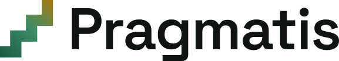
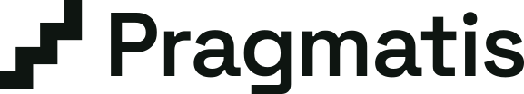
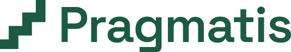
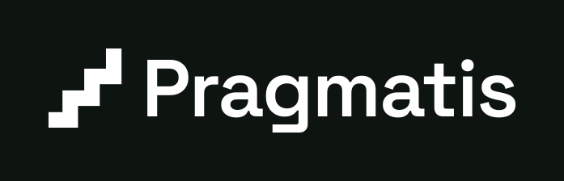
Símbolo solo
Los archivos sin fondo vienen recortados al dibujo; los que tienen fondo traen margen.


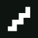
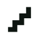
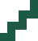

Favicon e íconos de app
El favicon está dibujado a mano sobre una retícula de 16 px para que los escalones queden nítidos, sin píxeles borrosos.
 Pragmatis | Software…
Pragmatis | Software…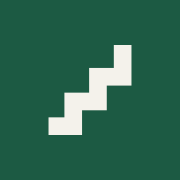
Foto de perfil (redes)
1080×1080. El símbolo queda dentro de la zona segura del recorte circular. Recomendada: verde.


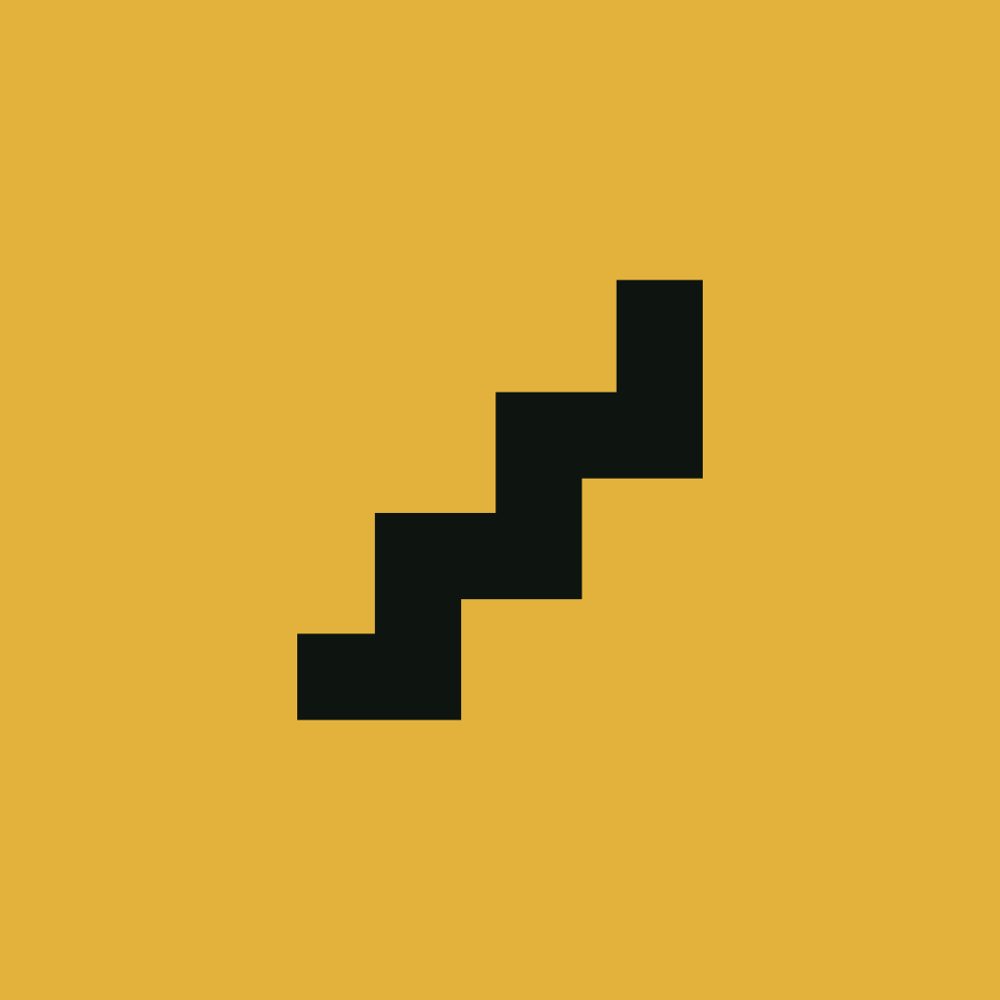
Imagen para compartir · Open Graph 1200×630
Es la imagen que aparece al compartir pragmatis.co en WhatsApp, LinkedIn, Facebook y X. Todo el texto está convertido a trazados.
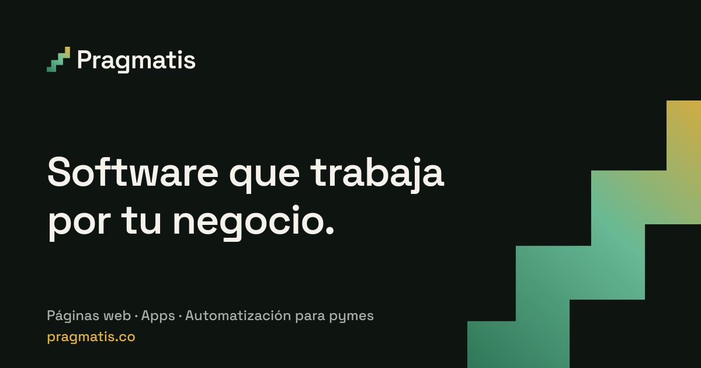
Degradados (por qué hay dos)
| Versión | Paradas | Por qué |
|---|---|---|
| Sobre claro | #1C5A43 → #3C8C68 → #A87B12 | El maíz puro (#E3B23C) tiene apenas 1.75:1 sobre papel y el escalón superior desaparecía. El ocre tostado da 3.4:1 (WCAG 1.4.11 pide ≥3:1 para gráficos). |
| Sobre oscuro | #2F7A5A → #6CC19A → #E3B23C | El verde páramo (#1C5A43) tiene solo 2.29:1 sobre tinta y el escalón inferior se perdía. Por eso arranca en #2F7A5A (3.57:1). |
Archivos
| Carpeta | Contenido |
|---|---|
simbolo/ | 7 variantes del símbolo |
lockup/ | 9 variantes de símbolo + nombre |
favicon/ | favicon.svg, favicon.ico, apple-touch-icon, ícono maskable 512 |
perfil/ | 3 fotos de perfil 1080×1080 |
redes/ | Open Graph 1200×630 |
png/ | Exportaciones PNG para plataformas que no aceptan SVG |
_fuente/generar.py | Script que genera todo lo anterior (Python + fontTools + HarfBuzz). Si cambias un color o una medida, se regenera todo de una vez. |